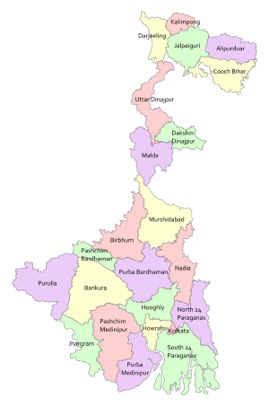

West Bengal, located in the eastern part of India, is renowned for its cultural richness and historical significance.
The state features a diverse range of attractions, from its vibrant capital city of Kolkata
to its scenic landscapes, including the picturesque Sunderbans and the majestic Himalayas.
Known for its festivals, including Durga Puja and the Kolkata International Film Festival,
West Bengal boasts a unique blend of tradition and modernity, with a rich literary and artistic heritage.
The city of Kolkata, once the capital of British India, is celebrated for its colonial architecture,
while Darjeeling, known for its tea gardens and stunning views of the Kanchenjunga, is a popular hill station.
With a history that includes significant contributions to Indian art, literature, and politics,
West Bengal continues to attract visitors with its cultural depth and scenic beauty,
offering a captivating experience for those interested in exploring its vibrant heritage.
|
 |